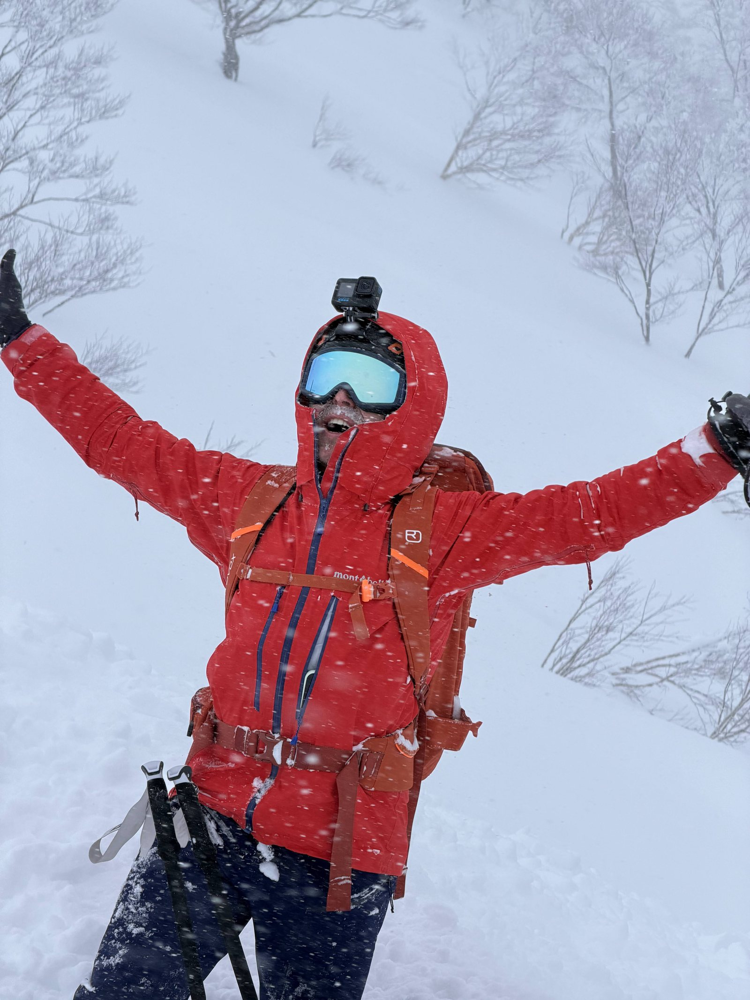
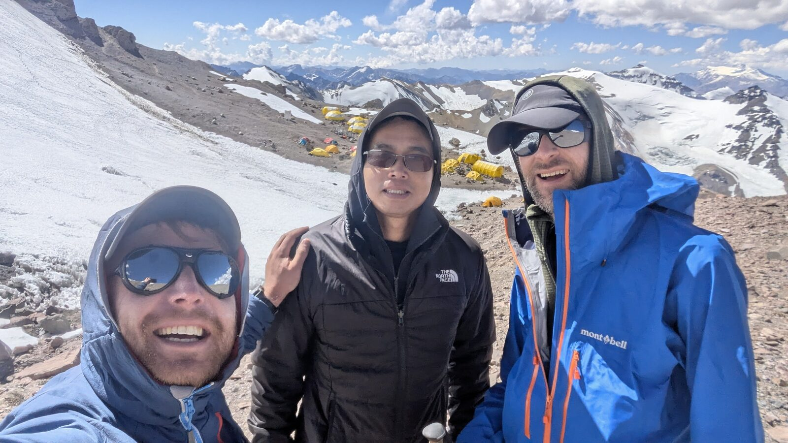
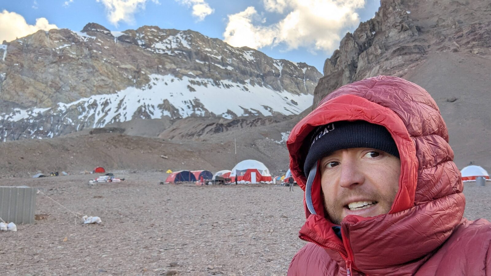
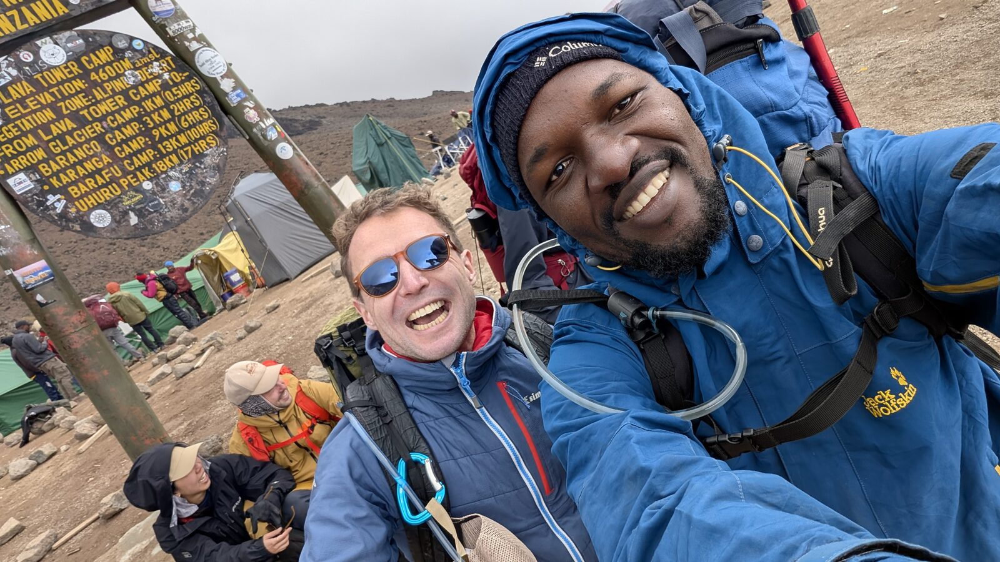
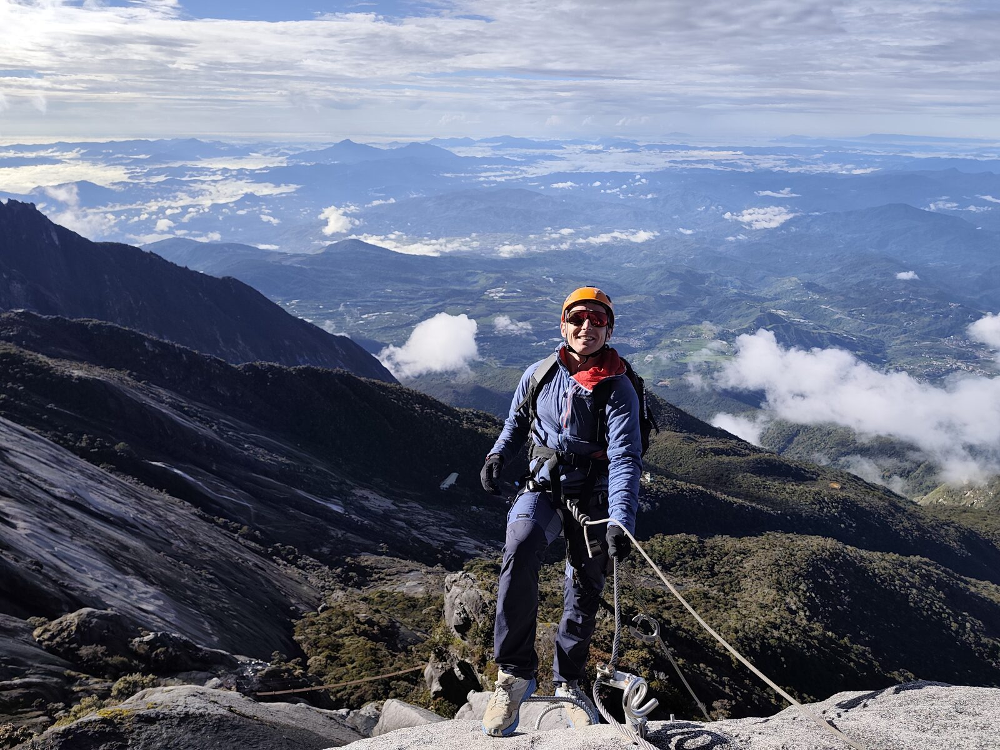

Join my next adventures.
👋 Hi, I'm Sam. I'm a content creator. I'm always outdoors, and my day job is at Google.
I reach 6M+ views, 400K likes and 10,000 followers.
I'm looking for brands to come along on my next adventures.
The brands I use
My content & audience
Reels & posts
Now the audience
6,279,623
Views
449,359
Likes & comments
9,867
Followers
181
Posts published

My latest adventures
I travel the world to go on the craziest outdoor adventures. I ski, hike, climb, cycle, paraglide, kite, dive. I go off grid and backcountry, or aim for the known peaks and most incredible routes around the world.
Join me!
- Matterhorn, Hörnli Ridge — 4,478 m summit Alpinism 24 Aug 2026
- Breithorn traverse — 4,164 m summit Alpinism 22 Aug 2026
- Weissmies — 4,017 m summit Alpinism 19 Aug 2026
- Üssers Barrhorn — 3,610 m summit Alpinism 17 Aug 2026
- Cycling across Japan — 1,500 km Cycling May – June 2026
- Skiing Mt. Fuji Backcountry skiing May 2026
- Skiing Mt. Yotei — 1,898 m summit Backcountry skiing February 2026
- Serengeti and Ngorongoro Safari January 2026
- Kilimanjaro — 5,895 m summit Alpinism January 2026
- Aconcagua — 6,500 m reached Alpinism January 2025
- Daisetsuzan Traverse Trekking August 2023
- Niseko, Hokkaidō Skiing January 2023
- Traversée du Jura Nordic ski February 2022
- GR20, Corsica Trekking July 2021
- Mongolia on horseback — and three days on motorbikes Horseback September 2018
- Kitesurfing in the Philippines Kitesurfing 2017
- Paragliding licence Paragliding October 2016
- Mont Blanc — 4,808 m summit Alpinism September 2015
- Hiking O'Henro in Japan — 88 temples Trekking June 2014
- Motorcycle across Vietnam — 40 days Motorbike August 2013
- Camino de Santiago — 1,670 km Trekking June 2013

Let's work together
Sponsorship
Back an expedition or sponsor me for a year. I'll deliver.
Gear testing
Send me your best gear and I will wear and promote them proudly.
Collaborations
Reels, posts, videos. Let's build a campaign that matches your objectives.

Contact me
hey@heysamtheman.com